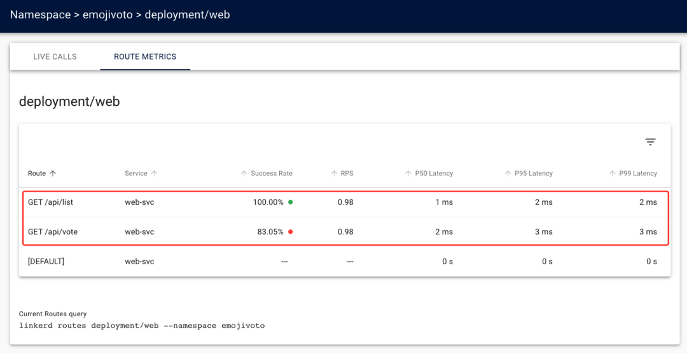
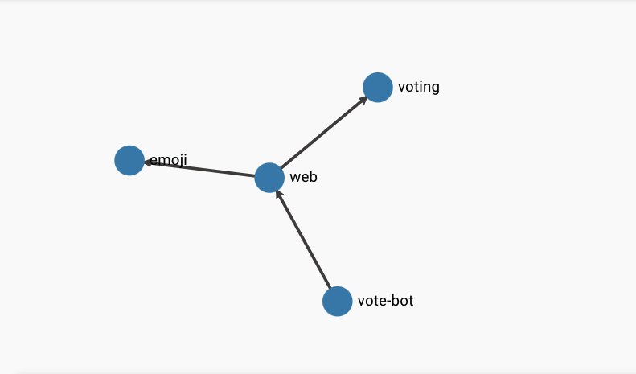
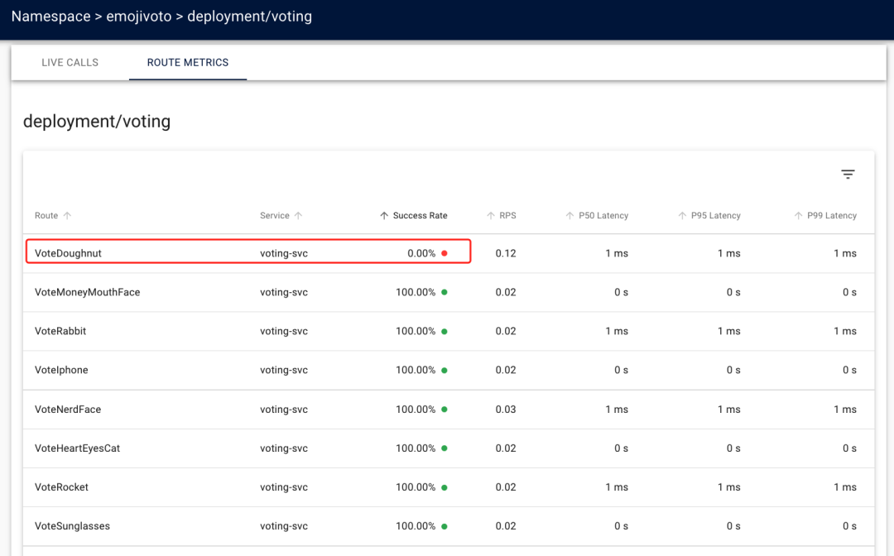

3 Linkerd 通过 ServiceProfile 实现超时和重试
Linkerd 服务网格解决的最重要问题之一是可观察性：提供服务行为的详细视图，Linkerd 对可观察性的价值主张是，它可以为你的 HTTP 和 gRPC 服务提供黄金指标，这些都是自动执行，无需更改代码或开发人员参与的。
开箱即用，Linkerd 在每个服务的基础上提供这些指标：跨越服务的所有请求，无论这些请求是什么。然而，有时需要获得更细粒度的指标。
例如前面的 Emojivoto 应用程序中的 Emoji 微服务，前面章节中看到的 Linkerd 报告的指标是在该服务的所有端点上聚合的。在实际场景下面，我们可能还希望看到特定端点的成功率或延迟，例如，一个端点可能对服务特别关键，或者特别慢。
为了解决这个问题，Linkerd 使用了服务配置文件（service profile）的概念，服务配置文件是一个可选的配置，它通知 Linkerd 对服务的不同类型的请求，按其路由进行分类。路由只是一个端点（对于 gRPC）或一个 HTTP verb 和端点（对于 HTTP）。
服务配置文件允许 Linkerd 为服务提供每个路由（pre-route）而不是每个服务指标，在后面的章节中，我们还将看到服务配置文件允许 Linkerd 对服务执行重试和超时等配置，但是现在我们先只关注指标。
另外需要注意的是服务配置文件并不是简单的服务与 Linkerd 一起运行所必需的，它们是可选的配置位，可以实现 Linkerd 的更高级行为，它们也是 Linkerd 使用 Kubernetes CRD 的少数示例之一。接下来我们仍然通过 Emojivoto 应用说明下服务配置文件的使用。
生成服务配置文件
Linkerd 的服务配置文件是通过实例化一个名为 ServiceProfile 的 Kubernetes CRD 来实现的。
ServiceProfile 会枚举 Linkerd 为该服务期望的路由。
我们可以手动创建 ServiceProfile，但也可以自动生成它们。
Linkerd CLI 有一个 profile 命令，可以通过几种不同的方式来生成服务配置文件。最常见的方法之一是从服务的现有资源（如 OpenAPI/Swagger 规范或 protobuf 文件）生成它们。
$ linkerd profile -h
Output service profile config for Kubernetes.
Usage:
linkerd profile [flags] (--template | --open-api file | --proto file) (SERVICE)
Examples:
# Output a basic template to apply after modification.
linkerd profile -n emojivoto --template web-svc
# Generate a profile from an OpenAPI specification.
linkerd profile -n emojivoto --open-api web-svc.swagger web-svc
# Generate a profile from a protobuf definition.
linkerd profile -n emojivoto --proto Voting.proto vote-svc
Flags:
-h, --help help for profile
--ignore-cluster Output a service profile through offline generation
-n, --namespace string Namespace of the service
--open-api string Output a service profile based on the given OpenAPI spec file
--proto string Output a service profile based on the given Protobuf spec file
--template Output a service profile template
Global Flags:
--api-addr string Override kubeconfig and communicate directly with the control plane at host:port (mostly for testing)
--as string Username to impersonate for Kubernetes operations
--as-group stringArray Group to impersonate for Kubernetes operations
--cni-namespace string Namespace in which the Linkerd CNI plugin is installed (default "linkerd-cni")
--context string Name of the kubeconfig context to use
--kubeconfig string Path to the kubeconfig file to use for CLI requests
-L, --linkerd-namespace string Namespace in which Linkerd is installed ($LINKERD_NAMESPACE) (default "linkerd")
--verbose Turn on debug logging
上面的帮助命令输出列出了可用于为 ServiceProfile 资源生成 YAML 的标志，可以看到
其中就有一个 --open-api 标志，用于指示 ServiceProfile 资源将从指定的 OpenAPI 或 Swagger 文档来生成服务配置文件，通过 --proto 标志可以指示从指定的Protobuf 文件生成服务配置文件。
Emojivoto 的 web 服务有一个简单的 Swagger 规范文件，内容如下所示：
# web.swagger
openapi: 3.0.1
version: v10
paths:
/api/list:
get: {}
/api/vote:
get: {}
现在我们就可以利用上面的规范文件来生成一个 ServiceProfile 对象，命令如下所示：
$ linkerd profile -n emojivoto --open-api web.swagger web-svc > web-sp.yaml
上述命令将输出服务 web-svc 的 ServiceProfile 资源清单文件。请注意，就像 linkerd install 命令一样，linkerd profile 命令也只生成 YAML，它不会将 YAML 应用到集群，所以我们将输出重定向到 web-sp.yaml 文件，对应生成的文件内容如下所示：
apiVersion: linkerd.io/v1alpha2
kind: ServiceProfile
metadata:
creationTimestamp: null
name: web-svc.emojivoto.svc.cluster.local
namespace: emojivoto
spec:
routes:
- condition:
method: GET
pathRegex: /api/list
name: GET /api/list
- condition:
method: GET
pathRegex: /api/vote
name: GET /api/vote
上面的资源清单文件就是一个典型的 ServiceProfile 对象的声明方式，spec.routes用来声明所有的路由规则，每条路由中包含一个 name 和 condition 属性：
- name 用来表示路由的名称，用于显示使用。
- condition 用来描述路由的规范。上例中生成的 condition 有两个字段：
- method：与请求匹配的 HTTP 方法。
- pathRegex：用于匹配路径的正则表达式。在我们的示例中，这些是完全匹配的规则，但通常这些是正则表达式。
除了通过 OpenAPI 可以生成服务配置文件之外，也可以通过 Protobuf 来生成，gRPC 协议使用 protobuf 对请求和响应进行编码和解码，这意味着每个 gRPC 服务也有一个 protobuf 定义。
Emojivoto 应用的 Voting 微服务就包含有 protobuf 定义，文件内容如下所示：
syntax = "proto3";
option go_package = "github.com/buoyantio/emojivoto/proto";
package emojivoto.v1;
message VotingResult {
string Shortcode = 1;
int32 Votes = 2;
}
message VoteRequest {
}
message VoteResponse {
}
message ResultsRequest {
}
message ResultsResponse {
repeated VotingResult results = 1;
}
service VotingService {
rpc VotePoop (VoteRequest) returns (VoteResponse);
rpc VoteJoy (VoteRequest) returns (VoteResponse);
rpc VoteSunglasses (VoteRequest) returns (VoteResponse);
......省略部分内容
}
同样现在我们可以使用 linkerd profile 命令来生成对应的 ServiceProfile 对象：
$ linkerd profile -n emojivoto --proto Voting.proto voting-svc > voting-sp.yaml
此命令的输出结果将比上一个命令的输出多很多，因为 Voting.proto 文件定义了更多路由，我们可以查看下 voting-sp.yaml文件，并将其与上面创建的 ServiceProfile 资源进行比较。
此外我们还可以用另外一种方法来动态生成 ServiceProfile，Linkerd 可以监控在指定时间段内进入的实时请求，并从中收集路由数据。
对于不了解服务提供的内部路由的集群管理员来说，这是一个非常强大的功能，因为 Linkerd 会负责处理请求并将它们写入文件，该特性的底层原理是上一节中提到的实时观察请求的 Tap 功能。
现在，让我们使用 linkerd profile 命令监控 emoji 服务 10 秒并将输出重定向到文件，与前面学习的所有命令一样，输出会打印到终端，并且此命令会将输出重定向到文件，因此我们只需运行该命令（并等待 10 秒）一次。
Linkerd Viz 扩展也有自己的配置文件子命令，可以与 Tap 功能一起使用，从实时流量中生成服务配置文件！如下命令所示：
$ linkerd viz profile emoji-svc --tap deploy/emoji --tap-duration 10s -n emojivoto > emoji-sp.yaml
当请求发送到 emoji 服务时，这些路由通过 Tap 功能收集。我们也可以使用 Emoji.proto 文件生成服务配置文件，然后去比较使用 --proto 和 --tap 标志创建的 ServiceProfile 资源的定义。
生成的 ServiceProfile 资源清单文件内容如下所示：
# emoji-sp.yaml
apiVersion: linkerd.io/v1alpha2
kind: ServiceProfile
metadata:
creationTimestamp: null
name: emoji-svc.emojivoto.svc.cluster.local
namespace: emojivoto
spec:
routes:
- condition:
method: POST
pathRegex: /emojivoto\.v1\.EmojiService/FindByShortcode
name: POST /emojivoto.v1.EmojiService/FindByShortcode
- condition:
method: POST
pathRegex: /emojivoto\.v1\.EmojiService/ListAll
name: POST /emojivoto.v1.EmojiService/ListAll
如果你需要手动编写服务配置文件，linkerd profile 命令有一个 --template 标志，可以生成 ServiceProfile 资源的脚手架，然后可以使用你的服务的详细信息对其进行更新。
$ linkerd profile --template -n emojivoto emoji-svc
### ServiceProfile for emoji-svc.emojivoto ###
apiVersion: linkerd.io/v1alpha2
kind: ServiceProfile
metadata:
name: emoji-svc.emojivoto.svc.cluster.local
namespace: emojivoto
spec:
# A service profile defines a list of routes. Linkerd can aggregate metrics
# like request volume, latency, and success rate by route.
routes:
- name: '/authors/{id}'
# Each route must define a condition. All requests that match the
# condition will be counted as belonging to that route. If a request
# matches more than one route, the first match wins.
condition:
# The simplest condition is a path regular expression.
pathRegex: '/authors/\d+'
# This is a condition that checks the request method.
method: POST
# If more than one condition field is set, all of them must be satisfied.
# This is equivalent to using the 'all' condition:
# all:
# - pathRegex: '/authors/\d+'
# - method: POST
# Conditions can be combined using 'all', 'any', and 'not'.
# any:
# - all:
# - method: POST
# - pathRegex: '/authors/\d+'
# - all:
# - not:
# method: DELETE
# - pathRegex: /info.txt
# A route may be marked as retryable. This indicates that requests to this
# route are always safe to retry and will cause the proxy to retry failed
# requests on this route whenever possible.
# isRetryable: true
# A route may optionally define a list of response classes which describe
# how responses from this route will be classified.
responseClasses:
# Each response class must define a condition. All responses from this
# route that match the condition will be classified as this response class.
- condition:
# The simplest condition is a HTTP status code range.
status:
min: 500
max: 599
# Specifying only one of min or max matches just that one status code.
# status:
# min: 404 # This matches 404s only.
# Conditions can be combined using 'all', 'any', and 'not'.
# all:
# - status:
# min: 500
# max: 599
# - not:
# status:
# min: 503
# The response class defines whether responses should be counted as
# successes or failures.
isFailure: true
# A route can define a request timeout. Any requests to this route that
# exceed the timeout will be canceled. If unspecified, the default timeout
# is '10s' (ten seconds).
# timeout: 250ms
# A service profile can also define a retry budget. This specifies the
# maximum total number of retries that should be sent to this service as a
# ratio of the original request volume.
# retryBudget:
# The retryRatio is the maximum ratio of retries requests to original
# requests. A retryRatio of 0.2 means that retries may add at most an
# additional 20% to the request load.
# retryRatio: 0.2
# This is an allowance of retries per second in addition to those allowed
# by the retryRatio. This allows retries to be performed, when the request
# rate is very low.
# minRetriesPerSecond: 10
# This duration indicates for how long requests should be considered for the
# purposes of calculating the retryRatio. A higher value considers a larger
# window and therefore allows burstier retries.
# ttl: 10s
上面的命令会输出包含 ServiceProfile 资源的字段和每个字段的详细说明，如果你需要 ServiceProfile 定义的快速参考，就可以使用 --template 标志！
到这里我们就了解了如何生成 ServiceProfile 资源清单文件，接下来我们来查看服务配置文件中定义的每个路由的指标数据。
Linkerd Dashboard 中查看 Per-Route Metrics
上面我们了解了如何使用 linkerd profile 命令来生成 ServiceProfile 资源清单文件，现在让我们重新运行生成命令，并直接将生成的 ServiceProfile 对象直接应用到集群中：
$ linkerd profile -n emojivoto --open-api web.swagger web-svc | kubectl apply -f -
serviceprofile.linkerd.io/web-svc.emojivoto.svc.cluster.local created
$ linkerd profile -n emojivoto --proto Voting.proto voting-svc | kubectl apply -f -
serviceprofile.linkerd.io/voting-svc.emojivoto.svc.cluster.local created
$ linkerd viz profile emoji-svc --tap deploy/emoji --tap-duration 10s -n emojivoto | kubectl apply -f -
serviceprofile.linkerd.io/emoji-svc.emojivoto.svc.cluster.local created
当上面的命令运行成功后，让我们打开 Linkerd 仪表盘来查看下相关指标，我们先导航到 Web Deployment 下查看每个路由的指标。

从上图可以看出来在 ROUTE METRICS 选项卡下面相比默认的 [DEFAULT] 路由多了两个路由，这两个路由就是我们通过 linkerd profile --open-api 命令从web.swagger 文件中生成的两条路由，每行列中，我们可以看到这两条路由的每条指标数据。
在部署 ServiceProfile 对象之前，我们只能看到 web 服务的聚合指标，部署后我们现在可以看到 /api/list 这条路由是 100% 成功的，/api/vote 路由有一些错误。
同样在服务配置文件之前，我们只知道 web 服务正在返回错误，现在我们错误是来自与 /api/vote 路由，另外的 [DEFAULT] 默认路由表示当服务配置文件中没有路由匹配请求时 Linkerd 使用的路由，其会捕获在 ServiceProfile 之前观察到的任何流量
现在我们再去看看另外的服务配置文件，其中的 Voting 服务比较具有代表性，因为它包含很多路由。
在 Linkerd Dashboard 页面上在 emojivoto 命名空间上进入 Voting Deployment，切换到 ROUTE METRICS 选项卡。
我们会该服务下有非常多的路由，上面的 web 服务我们知道 /api/vote 路由的请求成功率低于 100%，所有 voting 服务中的每条路由信息都有可能会提供相关的错误信息，由于路由非常多，我们可以直接按照 Success Rate 这一列进行升序排序，正常就可以看到 VoteDoughnut 路由成功率为 0。

通过 Linkerd CLI 查看 Per-Route Metrics
上面我们已经了解了如何通过 Dashboard 来查看 Emojivoto 应用中服务的每个路由指标了，接下来我们再尝试使用 CLI工具查看每个路由的指标。
linkerd viz routes 命令使用与仪表盘使用的相同指标，让我们看看使用 Linkerd CLI 来查看 emoji 服务的路由，如下所示：
$ linkerd viz routes deploy/emoji -n emojivoto
ROUTE SERVICE SUCCESS RPS LATENCY_P50 LATENCY_P95 LATENCY_P99
POST /emojivoto.v1.EmojiService/FindByShortcode emoji-svc 100.00% 1.0rps 1ms 1ms 1ms
POST /emojivoto.v1.EmojiService/ListAll emoji-svc 100.00% 1.0rps 1ms 1ms 1ms
[DEFAULT] emoji-svc - - - - -
我们可以看到，为 emoji 服务定义的两条路由都是成功的，并且在 1ms 的时间内处理了请求，可以看出这些路由是健康的。还要注意我们的默认路由，标记为 [DEFAULT]，同样这是 Linkerd 在服务配置文件中没有与请求匹配的路由时使用的路由。
现在我们用同样的方式通过 linkerd viz routes 命令来查看 voting 和 web 服务的路由，如下所示：
$ linkerd viz routes deploy/web -n emojivoto
ROUTE SERVICE SUCCESS RPS LATENCY_P50 LATENCY_P95 LATENCY_P99
GET /api/list web-svc 100.00% 1.0rps 1ms 1ms 1ms
GET /api/vote web-svc 88.33% 1.0rps 2ms 7ms 9ms
[DEFAULT] web-svc - - - - -
$ linkerd viz routes deploy/voting -n emojivoto
ROUTE SERVICE SUCCESS RPS LATENCY_P50 LATENCY_P95 LATENCY_P99
Results voting-svc - - - - -
Vote100 voting-svc 100.00% 0.0rps 1ms 1ms 1ms
VoteBacon voting-svc - - - - -
VoteBalloon voting-svc - - - - -
# ......
voting 服务的输出很长，因为它有很多路由，因此可以通过 grep 命令来查找 VoteDoughnut 路由：linkerd viz routes deploy/voting -n emojivoto | grep VoteDoughnut（或者可以使用 -o json 标志以及 jq 之类的工具来解析输出）。
到这里我们就了解了 Linkerd 的服务配置文件功能，目前我们暂时专注于服务配置文件的可观测性功能，我们可以查看之前了解的每个路由的黄金指标。接下来我们将进一步深入了解 ServiceProfile 并探索 Linkerd 的重试和超时功能。
重试与超时
接下来我们将来了解如何使用 ServiceProfile 配置超时、重试。Linkerd 可以通过流量拆分、负载均衡、重试和超时等功能来确保可靠性，这些中的每一个都在提高系统的整体可靠性方面发挥着重要作用。
但是这些特性究竟能增加什么样的可靠性呢？归根结底是 Linkerd 可以帮助防止瞬时故障。如果服务完全关闭，或始终返回失败，或始终挂起，那么再多的重试或负载均衡都无济于事。
但是，如果服务的一个实例出现问题，或者潜在问题只是暂时的，那么这个时候 Linkerd 就可以派上用场了，而且这些部分的、暂时的故障是分布式系统的最常出现的问题！
当涉及到 Linkerd 的负载均衡、重试和超时的核心可靠性特性时，这里有两件重要的事情需要理解（流量分割，也是一个可靠性特性，但有点不太一样，我们将在后面的章节中来解决这个问题）：
- 所有这些技术都发生在客户端：进行调用的代理是执行这些功能的代理，而不是服务器端的代理。如果你的服务器是网格的，但你的客户端不是的，那么将不会在两者之间的调用中启用这些功能！
- 这三个特性一起使用效果最好。没有重试，超时没有什么价值；如果没有负载均衡，重试几乎也没有什么价值。
我们可以先了解下负载均衡，Linkerd 会自动在可能的目的地之间对请求进行负载均衡，请注意请求这个词 - 与四层或 TCP 负载均衡不同，它会均衡连接，Linkerd 将建立到可能的端点集的连接，并在所有这些连接之间均衡请求。这允许对流量进行更细粒度的控制，并且在后台，Linkerd 的方法非常复杂，使用诸如服务器延迟的指数加权移动平均（EWMA） 之类的技术来优化请求的去向；尽可能跨端点汇集连接；并自动将 HTTP/1.1 流量升级到代理之间的 HTTP/2 连接。然而，从我们的角度来看，并没有进行任何配置，只需要知道：Linkerd 会自动在其端点之间平衡请求。
接着看看超时，超时是在路由上设置最长时间的一种方式。比如你的服务上有一个名为 getValue() 的路由，而 getValue() 的性能是不可预测的：大多数时候 getValue() 会在 10 毫秒内返回，但有时需要 10 分钟才能返回，也许是在某些有争议的资源上存在锁竞争。如果没有超时，调用 getValue()将需要 10 毫秒到 10 分钟之间的任何时间，但是如果设置了 500 毫秒的超时时间，那么 getValue() 则最多需要 500 毫秒。
添加超时可以作为一种机制来限制系统的最坏情况延迟，它允许 getValue() 的调用者具有更可预测的性能，并且不会占用等待 10 分钟长的调用返回的资源。其次，更重要的是，超时可以与重试和负载均衡相结合，以自动将请求重新发送到服务的不同实例。
如果 getValue() 在实例 A 上很慢，在实例 B 或 C 上可能会很快，甚至多次重试也将远远少于等待 10 分钟。
所以我们再来看看重试，重试是指 Linkerd 自动重试请求。这会在什么场景下有用呢？同样由于某些临时错误：如果特定实例上的特定路由返回错误，并且简单地重试该请求可能会导致响应成功，当然重要的是要意识到简单地重试请求并不能保证成功响应。如果底层错误不是暂时的，或者如果 Linkerd 无法重试，那么应用程序仍然需要处理这些错误。
在实践中，实现重试可能会很麻烦。如果想当然的做也是会有一定风险的，可能会给系统增加额外的负载，这个负载可能会让事情变得更糟糕。
一种常见的故障场景就是重试风暴：
- 服务 A 中的瞬时故障触发 B 对它请求的重试；
- 这些重试导致 A 过载，这意味着 B 开始失败的请求；
- 这会触发其调用者 C 对 B 的重试，然后导致 B 过载，依此类推。对于允许你配置每个请求的最大重试次数的系统尤其如此：
- 每个请求最多重试 3 次听起来可能没什么问题，但在最坏的情况下会增加 300% 的负载。
Linkerd 通过使用重试预算而不是每个请求的限制来设置重试的参数，将重试风暴的可能性降到最低。
重试预算是可以重试的请求总数的百分比，Linkerd 的默认行为是允许对失败的请求进行 20% (200) 次重试，再加上每秒额外的 10 个请求。例如，如果原始请求负载是每秒 1000 个请求，那么 Linkerd 将允许每秒重试 210 个请求。当预算用尽时，Linkerd 不会重试请求，而是会向客户端返回 504 错误。
综上所述：负载均衡、重试和超时都是为了在出现部分、暂时性故障的情况下保障应用程序的可靠性，并防止这些故障升级为全局中断。但它们并不是灵丹妙药，我们的应用程序中必须仍然能够处理错误。
使用 Per-Route Metrics 来确定何时重试和超时
上面我们了解了在 Linkerd 中使用重试和超时的原因，接下来让我们在前面了解的可观测性功能的基础上，使用指标来做有关应用重试和超时的决策。
首先，我们将查看 emojivoto 命名空间中所有 Deployments 的统计信息，然后我们再深入研究不健康的服务。
直接使用 linkerd viz stat 命令即可，如下所示：
$ linkerd viz stat deploy -n emojivoto
NAME MESHED SUCCESS RPS LATENCY_P50 LATENCY_P95 LATENCY_P99 TCP_CONN
emoji 1/1 100.00% 2.3rps 1ms 1ms 4ms 3
vote-bot 1/1 100.00% 0.3rps 1ms 2ms 2ms 1
voting 1/1 87.01% 1.3rps 1ms 7ms 9ms 3
web 1/1 91.91% 2.3rps 1ms 10ms 28ms 3
stat命令向我们展示了黄金指标，包括成功率和延迟，我们可以注意到 voting 和 web 服务的成功率低于 100%，接下来我们可以通过 linkerd viz edges 命令来了解服务之间的关系。
$ linkerd viz edges deploy -n emojivoto
SRC DST SRC_NS DST_NS SECURED
vote-bot web emojivoto emojivoto √
web emoji emojivoto emojivoto √
web voting emojivoto emojivoto √
prometheus emoji linkerd-viz emojivoto √
prometheus vote-bot linkerd-viz emojivoto √
prometheus voting linkerd-viz emojivoto √
prometheus web linkerd-viz emojivoto √
当然也可以通过 Linkerd Dashboard 来查看章鱼图去了解服务之间的关系。

从上面的结果可以看出 web 服务中的 Pods 对 voting 服务的 Pods 进行了调用，所以我们可以猜测是 voting 服务导致了 web 服务的错误，当然这还没结束，还记得前面我们介绍的 ServiceProfile 文件吗？
我们有每条路由的指标，应该能够准确地看到哪些路由的成功率低于 100%，可以通过 linkerd viz routes 命令去了解 voting 服务的路由指标情况，如下命令所示：
$ linkerd viz routes deploy/voting -n emojivoto
# ......
VoteDog voting-svc - - - - -
VoteDoughnut voting-svc 0.00% 0.1rps 1ms 1ms 1ms
VoteFax voting-svc - - - - -
VoteFire voting-svc 100.00% 0.0rps 1ms 1ms 1ms
VoteFlightDeparture voting-svc - - - - -
# ......
同样我们也可以通过 Linkerd Dashboard 去查看 voting 服务的 ROUTE METRICS 信息，如下图所示：

最终我们可以定位到是 VoteDoughnut 这条是请求失败的路由。
现在我们不仅知道 web 服务和 voting 服务之间发生了错误，而且也知道了 VoteDoughnut 路由发生了错误。接下来我们可以使用重试来尝试解决错误，同时也可以要求开发人员进行代码调试。
配置重试
在我们开始为 VotingDoughnut路由配置重试之前，我们必须首先仔细查看 web 和 voting 服务的指标，因为这将帮助我们真正了解应用重试是否可以解决问题。
这里我们将只使用 Linkerd CLI，因为它可以用通过使用 -o wide 标志向我们显示实际和有效的请求量和成功率，Linkerd 仪表盘会显示整体成功率和 RPS，但不显示实际和有效的指标。实际指标和有效指标之间的区别是：
- 实际值来自接收请求的服务器的角度
- 有效值是从发送请求的客户端的角度来看的
在没有重试和超时的情况下，显然这两个数据是相同的。但是，一旦配置了重试或超时，它们就可能会不一样了。例如，重试会使实际的 RPS 高于有效的 RPS，因为从服务器的角度来看，重试是另一个请求，但从客户端的角度来看，它是同一个请求。重试可以使实际成功率低于有效成功率，因为失败的重试调用也发生在服务器上，但不会暴露给客户端。而超时可能会产生相反的效果：这取决于具体的返回时间，一个最终成功返回的超时请求可能会使实际成功率高于有效成功率，因为服务器将其视为成功，而客户端只看到失败。
总的来说就是 Linkerd 的实际和有效指标在重试或超时的情况下可能会有所不同，但实际数字代表实际命中服务器的情况，而有效数字代表了在 Linkerd 的可靠性逻辑完成其职责后，客户端有效地得到了对其请求的响应。
比如我们通过下面的命令来查看 vote-bot 服务的路由指标情况
$ linkerd viz routes deploy/vote-bot -n emojivoto --to deploy/web -owide
ROUTE SERVICE EFFECTIVE_SUCCESS EFFECTIVE_RPS ACTUAL_SUCCESS ACTUAL_RPS LATENCY_P50 LATENCY_P95 LATENCY_P99
GET /api/list web-svc 100.00% 1.0rps 100.00% 1.0rps 1ms 2ms 2ms
GET /api/vote web-svc 86.21% 1.0rps 86.21% 1.0rps 2ms 7ms 10ms
[DEFAULT] web-svc - - - - - - -
上面的命令中我们添加了一个 -o wide 的标志，这样输出结果会包含实际和有效的成功和 RPS 指标。
从 vote-bot 服务来看，web 服务的 /api/vote 路由的有效成功率和实际成功率都低于 100%，这是因为现在我们还没有配置重试。
而且我们不能假设所有请求都是可重试的，重试请求对于 Linkerd 来说，是有非常具体的条件的：
- 现在，使用 HTTP POST 方法的请求在 Linkerd 中不可重试。因为 POST 请求几乎总是在请求 body 中包含数据，重试请求意味着代理必须将该数据存储在内存中。因此，为了保持最小的内存使用，代理不存储 POST 请求 body，并且它们不能被重试。
- 正如我们前面提到过的，Linkerd 仅将响应中的 5XX 状态码视为错误，而 2XX 和 4XX 都被识别为成功状态码。4XX 状态码表示服务器查看但找不到资源，这属于服务器的正确行为，而 5XX 状态码表示服务器在处理请求时遇到了错误，这是不正确的行为。
现在我们通过在 web 服务的 /api/vote 路由中添加重试功能来验证下前面的知识。我们再次查看下 web 服务的 ServiceProfile 对象，内容如下所示：
# web-sp.yaml
apiVersion: linkerd.io/v1alpha2
kind: ServiceProfile
metadata:
name: web-svc.emojivoto.svc.cluster.local
namespace: emojivoto
spec:
routes:
- condition:
method: GET
pathRegex: /api/list
name: GET /api/list
- condition:
method: GET
pathRegex: /api/vote
name: GET /api/vote
接着我们为路由 /api/vote增加一个 isRetryable: true 的属性，如下所示：
# web-sp-with-retry.yaml
# ......
- condition:
method: GET
pathRegex: /api/vote
name: GET /api/vote
isRetryable: true
更新后重新应用该 ServiceProfile 对象：
$ kubectl apply -f web-sp-with-retry.yaml
应用后我们可以观察 vote-bot 服务的路由指标变化情况：
$ watch linkerd viz routes deploy/vote-bot -n emojivoto --to deploy/web -o wide
Every 2.0s: linkerd viz routes deploy/vote-bot -n emojivoto --to deploy/web -o wide MBP2022.local: Sun Aug 28 17:41:37 2022
ROUTE SERVICE EFFECTIVE_SUCCESS EFFECTIVE_RPS ACTUAL_SUCCESS ACTUAL_RPS LATENCY_P50 LATENCY_P95 LATENCY_P99
GET /api/list web-svc 100.00% 1.0rps 100.00% 1.0rps 2ms 8ms 10ms
GET /api/vote web-svc 85.00% 1.0rps 16.50% 5.0rps 4ms 255ms 290ms
[DEFAULT] web-svc - - - - - - -
可以看到实际成功率变得非常底了，因为重试的结果可能还是错误。
上面我们提到了 Linkerd 的重试行为是由重试预算配置的，当配置 isRetryable: true 的时候，会应用默认的重试预算规则，以下 ServiceProfile 资源的 YAML 片段，显示了具有默认值的 retryBudget 对象配置：
spec:
retryBudget:
retryRatio: 0.2
minRetriesPerSecond: 10
ttl: 10s
其中 retryBudget 参数是具有三个主要的字段：
- retryRatio：重试率，表示重试请求与原始请求的最大比率，retryRatio 为 0.2 表示重试最多会增加 20% 的请求负载。
- minRetriesPerSecond：这是在 retryRatio 允许的重试之外，每秒允许的重试次数（这允许在请求率很低时进行重试），默认为 10 RPS。
- ttl：表示在计算重试率时应考虑多长时间的请求，一个较大的值会考虑一个较大的窗口，因此允许更多的重试。默认为 10 秒。
配置超时
除了重试和重试预算外，Linkerd 还提供超时功能，允许你确保对指定路由的请求永远不会超过指定的时间。
为了说明这一点，让我们重新来看一看 web 和 voting 服务的每个路由指标。
$ linkerd viz routes deploy/vote-bot -n emojivoto --to deploy/web -o wide
$ linkerd viz routes deploy/web -n emojivoto --to deploy/voting -o wide
在前面我们已经了解到 web 和 voting 之间的延迟接近 1ms，为了演示超时，我们将 /api/vote路由超时时间设置为 0.5ms，这样基本上都无法满足要求就超时了，Linkerd 会将错误发送会客户端，成功率变为 0 了。
修改 web 服务的 ServiceProfile 对象，添加 timeout 属性，如下所示：
# web-sp-with-timeout.yaml
apiVersion: linkerd.io/v1alpha2
kind: ServiceProfile
metadata:
name: web-svc.emojivoto.svc.cluster.local
namespace: emojivoto
spec:
routes:
- condition:
method: GET
pathRegex: /api/list
name: GET /api/list
- condition:
method: GET
pathRegex: /api/vote
name: GET /api/vote
timeout: 0.5ms
isRetryable: true
应用上面的对象后，服务的有效和实际成功率就会都下降到 0，因为 /api/vote 在 0.5ms 内都会超时，所以成功率变为 0。
$ watch linkerd viz routes deploy/vote-bot -n emojivoto --to deploy/web -o wide
Every 2.0s: linkerd viz routes deploy/vote-bot -n emojivoto --to deploy/web -o wide MBP2022.local: Sun Aug 28 19:12:15 2022
ROUTE SERVICE EFFECTIVE_SUCCESS EFFECTIVE_RPS ACTUAL_SUCCESS ACTUAL_RPS LATENCY_P50 LATENCY_P95 LATENCY_P99
GET /api/list web-svc 100.00% 1.0rps 100.00% 1.0rps 2ms 2ms 2ms
GET /api/vote web-svc 0.00% 1.0rps 0.00% 0.0rps 0ms 0ms 0ms
[DEFAULT] web-svc
到这里我们就了解了 Linkerd 中重试和超时使用，重试和超时是 Linkerd 整体策略的一部分，用于在出现瞬时故障时增加可靠性。
我们通过使用服务配置文件中的每条路由指标来决定何时以及如何配置重试和超时。Linkerd 用重试预算为其重试提供参数，可以避免出现"重试风暴"的情况，当重试预算用完时，代理将停止向服务发送请求，以避免服务过载，并可能影响到应用程序的其他部分。